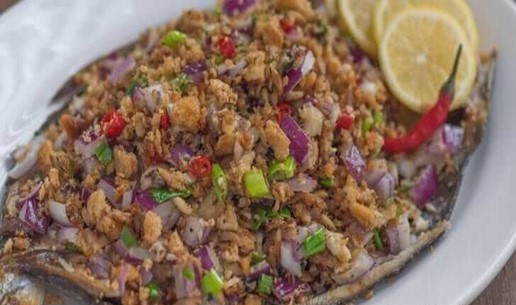

Bangus Sisig
What is Bangus Sisig?
Bangus Sisig is easy to make and delicious as an appetizer or main dish. Made with flaked fish, citrus juices, and peppers, it's a delicious medley of tangy, savory, and spicy flavors sure to hit the spot!
Ingredients
1 piece bangus fried or baked, and then flaked
1 piece onion chopped
1/2 cup scallions chopped
1 tablespoon chili pepper labuyo or Thai chili
1/2 teaspoon ground black pepper
1 tablespoon soy sauce
2 teaspoons ginger minced
1 cup crushed chicharon pork rind
1/2 tablespoon mayonnaise
1/4 cup unsalted butter
1 teaspoon garlic powder
1/2 teaspoon salt
Instructions / How to Cook
1. Melt-in butter in a large pan.
2. Add the onion and cook for 3 minutes.
3. Put-in the ginger. Stir and cook for 2 minutes in low to medium heat.
4. Add the bangus and then stir.
5. Put-in the garlic powder, salt,ground black pepper, and soy sauce. Stir and cook for 5 minutes.
6. Add the chicharon, scallions, and chili. Stir and cook for 3 minutes more.
7. Put-in the mayonnaise.
8. Stir.
9. Transfer to a serving plate. Serve.